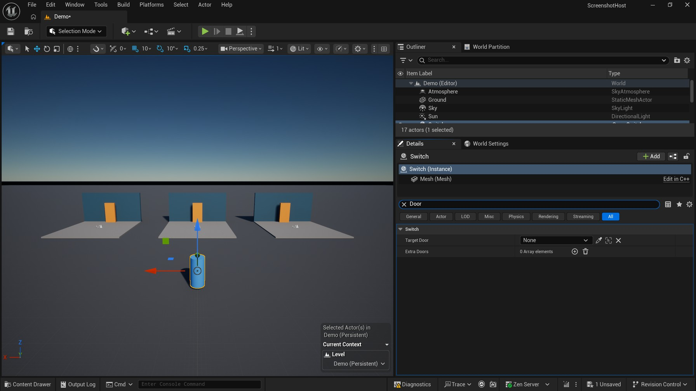
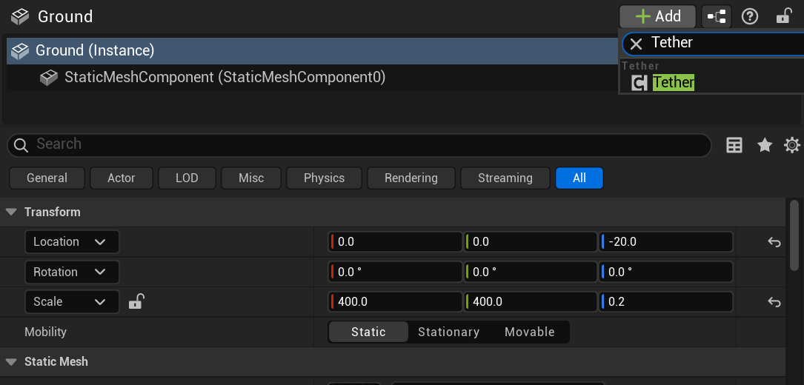
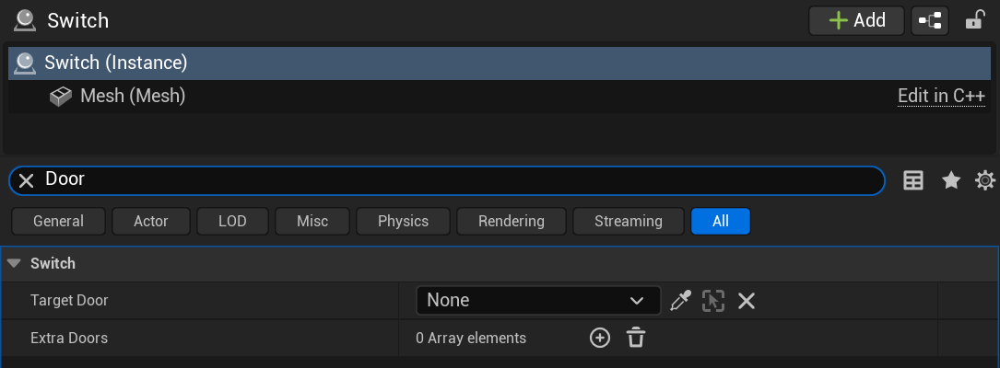
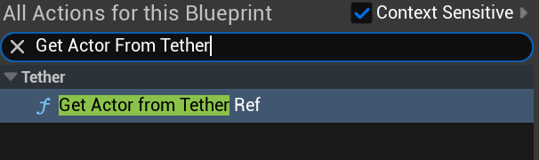

Before You Start
You need the plugin in your project's Plugins folder. It turns itself on,
along with the engine's Data Validation plugin it uses for its checks. Everything below
happens in the Unreal editor. Each step has screenshots and a short video, and the
videos run in order if you'd rather just watch.
Every step uses the same small demo level. One room is built once and placed three times, as Wing_A, Wing_B, and Wing_C. Each room has an orange door. A blue switch stands in front of them. The goal is to point the switch at one specific door.
One term comes up a lot. A level instance is a piece of a level you build once and place as many times as you like, the way you'd place a prop. Three copies of one room is three level instances of the same room.

Step 1: Tag An Actor
An actor can only be pointed at once it carries a Tether component. Add it to a class or a Blueprint and every actor you place from it is tagged. Add it to one placed actor and only that one is.
- Select it: click the actor in the Outliner, so the Details panel shows it.
- Add the component: click "Add" at the top of the Details panel, type "Tether", and pick it.
- Leave it as it is: the component has nothing to fill in. The ID it relies on is one the engine already gives placed actors.

The doors in the demo already have the component from their class. The video adds one to
the ground, a plain engine StaticMeshActor, to show that any placed actor
can take it. If you're on the engineering side, the component is
UTetherComponent, and the door adds it in its constructor:
Tether = CreateDefaultSubobject<UTetherComponent>(TEXT("Tether"));Step 2: Give The Switch A Tether Ref
The switch needs a property of type "Tether Ref". In a Blueprint, add a variable and choose that type. In C++ it's one line. Either way, the switch's Details panel gets a new row that starts out saying "None".

The demo switch holds two refs. Target Door only accepts door actors. Extra Doors is a list that takes any tagged actor:
UPROPERTY(EditAnywhere, meta = (AllowedClasses = "/Script/MyGame.Door"))
FTetherRef TargetDoor;
UPROPERTY(EditAnywhere)
TArray<FTetherRef> ExtraDoors;The AllowedClasses metadata limits the dropdown to those classes. It only
works on C++ properties, since a Blueprint variable can't carry that metadata.
Step 3: Pick The Door
Click the dropdown. You get a list of everything in the level that has the tag, laid out the same way as the Outliner. Rooms you placed open up like folders. When the same room is placed three times you see three doors and can pick the one you mean.

Click a door and the row fills in. It shows the door's name first, and then, in dimmer text, the room it's in. Only the door you picked is the target. The other two copies are untouched. The ✕ button clears it back to "None".
You can also pick straight from the level. Click the eyedropper beside the dropdown, then click the door in the viewport. It takes the door itself, even inside a placed room, where a normal click would select the whole room. Escape cancels it. The button next to the eyedropper does the reverse: it selects the door you picked and moves the camera to it.

Step 4: Rename, Move, And Duplicate
The ref points at the door's placement, not at its name or its spot in the level. You can keep editing the level around it.
- Lock the Details panel: the lock icon at its top right keeps the switch on screen while you select other things.
- Rename the room: select Wing_A, press F2, and type "North Wing". The row picks up the new name by itself.
- Move the room: the row doesn't change, since position was never part of the link.
- Duplicate the room: Ctrl+D makes a copy with a door of its own. The dropdown now lists both. The ref stays on the original.
Moving actors between Outliner folders is safe too. A handful of editor actions do change an actor's ID. The Fixing Broken Refs section covers them.
Step 5: Use It In Blueprint
When the game runs, the switch asks the plugin for its door and gets the actual door actor back. In Blueprint that's the "Get Actor From Tether Ref" node.
- Add the node: right-click the "Event Graph" and search for "Get Actor From Tether Ref". It sits under "Tether".
- Wire it up: feed it the ref, pick the class you expect in "Actor Class", and use "Return Value".


The node returns the actor, or None when it can't, for example when the ref is empty, its target isn't loaded yet, or the target isn't the class you asked for. Its owner pin is hidden and set to self, since a ref is resolved from the actor that holds it. In C++ the same call reads:
if (ADoor* Door = UTetherLibrary::ResolveTetherRef<ADoor>(this, TargetDoor))
{
// Open it, highlight it, and so on.
}Tether Refs also work in arrays, sets, and maps, in C++ and in Blueprint.
Step 6: Build The Switch Into The Room
So far the switch sits in the main level and points at one copy. When the switch is part of the room itself, you want every copy of the room to open its own door. Tether handles that by storing the ref relative to the room.
- Open the room's level: every copy in the demo comes from this one asset.
- Place a switch inside the room and pick the room's door, the same way as in step 3.
- Save the room: back in the main level, each copy of the room has its own switch.
Both actors live in the same level. The ref is stored relative to that level. Each copy's switch resolves to the door in its own copy, including copies you load at runtime. Picking a door from outside the room makes a ref to that one placement.
Step 7: Let The Editor Check Your Work
Right-click the level in the Content Browser and choose "Asset Actions" -> "Validate Assets", or type "Validate" into the menu's search box. Anything that can't work gets listed in the Message Log, with the actor it's on. Click the name to jump to it. The same checks run when you save, if your project validates on save.


The "Not Loaded" Label
In a big world, Unreal only keeps nearby parts loaded. When the door's part isn't loaded, the row still shows the door's name and room, and adds "not loaded" so you know the door exists but isn't in memory right now. That's normal. The ref starts resolving again as soon as that part streams back in.

Troubleshooting
Fixing Broken Refs
A ref usually stops resolving for one of three reasons: its target is gone, its target lost its Tether component, or its target got a new ID. In all three the row in the Details panel changes. The checks from step 7 report it too.
- The dropdown doesn't list my door
- The door is missing its tag. Go back to step 1. If the property limits what kind of actor it accepts, the door has to be that kind.
- It worked in the editor but not in the packaged game
- Run Validate Assets first. If that's clean, check out the packaged builds section on the Inside Tether page.
A Deleted Target
- The row - It keeps the door's saved name and room, and adds "not loaded".
- The report - In a map without World Partition, like the demo, a warning that the ref "matches no actor in the loaded levels". In a World Partition map it's an error, since the editor can check unloaded actors too.
- The fix - Undo the delete with Ctrl+Z, or open the dropdown and pick a door again.
A Removed Tether Component
- The row - The entry can't resolve any more.
- The report - An error that the actor "has no UTetherComponent, so it never resolves".
- The fix - Add the component back. The ID belongs to the actor. Every ref to it works again.
Removing the component from one placed actor only affects that actor. Its siblings from the same class still work.
An Actor With A New ID
- The row - It shows "not loaded", even though a door is still standing there.
- The report - The same "matches no actor" message as a deleted target. In a World Partition map it's an error that names these three actions and asks you to re-pick the target.
- The fix - Open the dropdown and pick the door again. It's listed on its own now, outside any room.
Three editor actions copy actors under the hood, which gives the copies new IDs: "Move to Level", "Create Level Instance" from a selection, and "Break" on a level instance. Refs to those actors need picking again. Moving things between Outliner folders doesn't count.
Keep Reading
- Inside Tether - The plain-language explanation of the ID, then the engineering details.
- Reference - Every option, check, and message in one place.